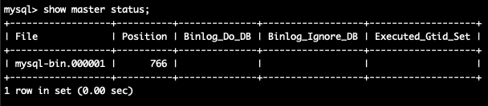
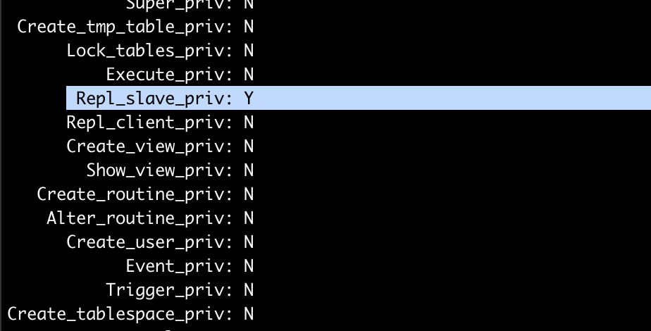
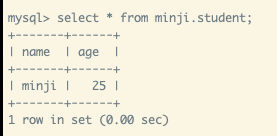
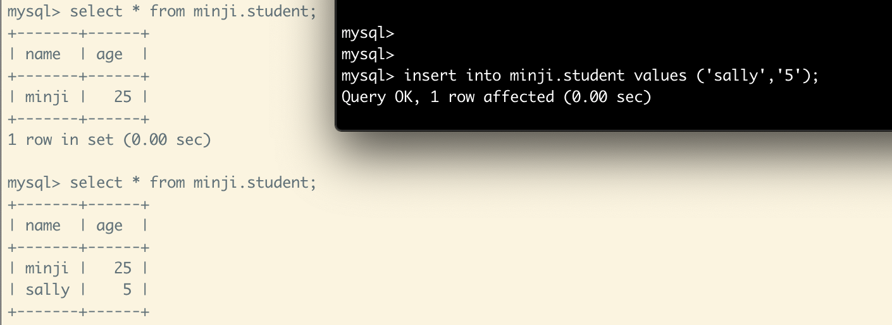

[ Amazon Web Services ]
RDS 이중화
마스터가 온프레미스 환경 ✅ (디비 서버가 우리 PC에 있을 때)
https://docs.aws.amazon.com/ko_kr/AmazonRDS/latest/UserGuide/mysql_rds_set_external_master.html
마스터가 온프레미스 환경일 때, RDS의 이중화 설정해보기.
1. 마스터로 지정할, centos7 인스턴스 생성.
2. DB 설치, 초기설정
방화벽 설정
MySQL 설치
MySQL root 패스워드 설정
3. 마스터 설정
1) /etc/my.cnf 파일 설정
가장 하단에, 다음 내용을 추가한다.
저장 후 나가서,
mysql 시스템 재시작
4. Master 상태 확인
mysql -u root -p 로그인 후, 데이터를 몇 개 만들어두자.
Master 상태 확인

766. 이따 슬레이브 설정 시 필요함 !
5. Replication할 때 사용할 계정 생성
확인 :
Repl_slave_priv : Y 되어있는지 확인한다.

6. AWS의 RDS에 생성
RDS 데이터베이스 생성 후 DB 접속.
DB 백업을 해 주거나, 직접 생성하는 등의 방법으로
마스터에 있는 데이터랑 똑같은 상태로 만든다.

7. AWS의 RDS Slave 설정
아래 명령어를 조건에 맞게 입력한다.
[예시]
앤터!
결과 :

마스터에서 DB를 insert 하면 슬레이브에서 바로 적용된다.